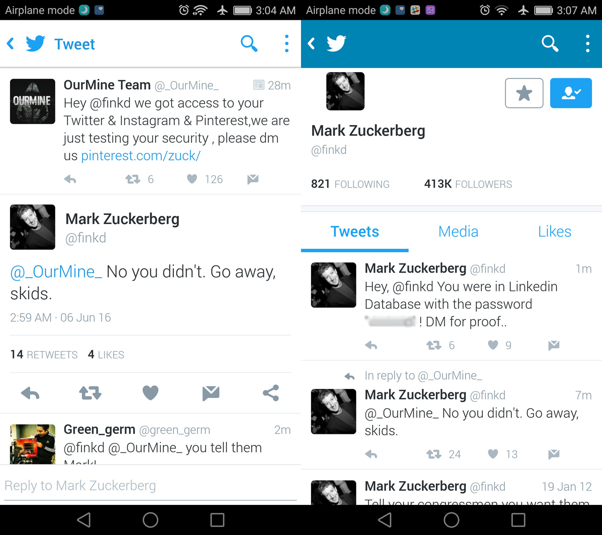

About
開発者について
稗田 裕太郎
山口県長門市出身。某ITサービス企業で働いています。
最近、趣味でコードを学び始めRuby on Rails を使って土地と音楽を結びつける新サービスを開発しました。
サービス
Muzip
このサービスは土地とその地に所縁のあるアーティストを結びつけ聴くことができるサービスです。
Twitter clone
twixxterをイメージしたサービスです。つぶやけます。
モノリスト
楽天市場の商品を検索し、自分が持っているもの・欲しい物を共有できるWebサービスです。